Classic and Modern Tennis:¶
Modern Tennis, Your Tennis¶
John Yandell¶
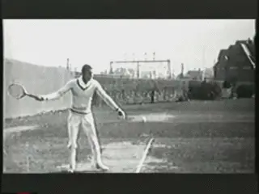
How absolute is the distinction between modern and classical tennis?
As a player you may have found yourself perplexed--or even tormented--by this question: Should I play "classical" or "modern" tennis?
You may have heard "definitive" statements from coaches on both sides of the divide. Possibly you have heard the same coaches make derisive statements about the "opposite" view.
The radical advocates for the modern game argue that tennis has changed fundamentally over time and that so called "modern" technique is vastly superior to its antiquated predecessors. Everyone should play modern tennis and even the most extreme modern technical elements are applicable for any player who has ever touched a racket.
The anti-modern viewpoint is that there is an "unbridgeable" gap between pro players and the rest of the tennis world. This means that trying to emulate pro players results in frustration, injury, and bad tennis.
You can't play like the pros and you will never reach your potential if you try to. Modern tennis is something that should only be watched on television.
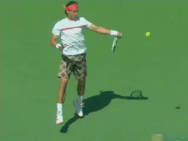
Is "modern" tennis something to learn from or just watch on TV?
As a player how do you proceed when the viewpoints of the authorities are so adamantly contradictory? And how, if at all, should your decision relate to your age, your level, or playing style?
In these articles I want to examine these issues, because they can have a huge impact on any player's development, enjoyment of the game, and competitive success.
We'll start by looking at a critical unexamined assumption that is shared by both sides in the debate. This assumption has led to fundamental misunderstandings about the history of technique.
Then in this article and the next we'll try to cut through all the partisan rhetoric and clarify the actual technical elements used by high level players across the history of the game from the "classic" to the "modern" era.
Finally in a third article, we'll examine how this wide range of historical technical elements may or may not apply to games of players at all levels, and try to create a framework to help you decide what to adopt for yourself.
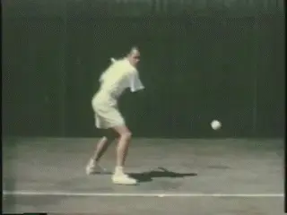
Is the divide from the classic to the modern era "unbridgeable"?
This series of articles actually is the deep background for a new series of teaching articles I plan to publish over the next two years. This series, the result of over a decade of filming, research and on court experimentation, will offer teaching progressions for players at all levels for developing and correcting technique on all the strokes.
The goal is to give you a clear path help you create the best possible technical foundation for a lifetime of tennis success and pleasure.
For the past 10 years I have been studying every tree in tennis forest. Now it's time to elevate and make some general conclusions about the forest itself. I am tremendously excited at this prospect and look forward to sharing the results with you here on TPA.
The Assumption
The first step in unraveling the whole modern versus classical debate is to understand the assumption that is, ironically, accepted by both sides in the debate without critical scrutiny.
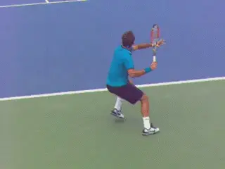
What classic elements are modern and vice versa?
This is the belief that there really is some hard, unbridgeable distinction between classical and modern tennis and that one style or the other is somehow inherently superior.
Is that assumption true? How much difference is there really between modern and classical tennis?
A careful historical examination of the top players, beginning with the game's first great superstar Big Bill Tilden and continuing all the way to Roger Federer, Rafael Nadal, and Novak Djokovic shows that, as with most rhetorical distinctions, the reality is more complex than either side understands.
Here is the reality. Classical tennis is partially modern, and modern tennis is partially classical. Rather than a cosmic divide, there is a continuum between the two styles.
You can find many "modern" elements in tennis going back to the 1920's. And there are many "classical" elements that are still fundamental to tour technique today. Has the game evolved? Definitely. Have there been major changes that have affected technique? Yes.
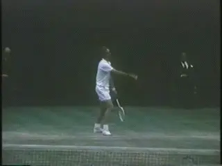
Changes in tactical styles separate classic and modern tennis.
Are some modern elements less common in the games of older classical players? Affirmative. Have there been fundamental changes in tactical styles? Ditto.
But is there some deep, categorical, technical chasm separating the two styles? No. Not if you really look closely at the whole complex, historical picture.
The answer to the question posed at the start of this article is that there is no simple answer as to whether you should play "classical" or "modern" tennis. The real answer is not an "either/or," the real answer is some version of an "and/both."
Every player needs to draw from the full range of potential elements manifest in the history of high level tennis in experimenting with and creating a technical and tactical style that suits his ability, commitment, and personal preferences.
It's counter productive to exclude and vilify some of those elements one way or the other. The real goal is to understand how they may or may not help you play tennis at the level you dream of reaching.
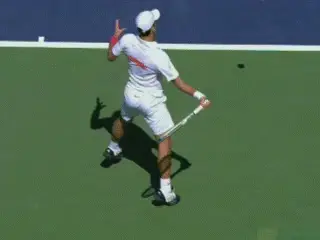
Try this shot with a 16 ounce wooden racket.
Fundamental Change
It is undoubtedly true that technique has evolved in many significant ways in over 100 years. Some of the changes are a matter of emphasis and degree. But others have resulted mainly from changes in the equipment and the court surfaces.
The most obvious change that has affected technique is in the rackets and the strings. Have you ever tried to hit an extreme grip heavy topspin windshield wiper forehand on an incoming 90mph shoulder high ball with 3000rpm of spin using a wooden racket that weighed 16 ounces and was strung with natural gut?
A few years ago at Indian Wells, a national tennis writer talked Novak Djokovic into that experiment. Djokovic's evaluation was something to the effect of "With this racket I don't have a forehand."
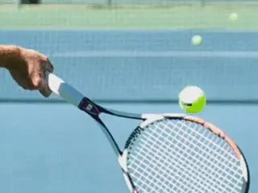
The poly string snap back effect radically increases spin.
Although it took decades for players to discover the full implications, the graphite racket revolution of the 1980's was an epochal shift. This started with the natural increase in the velocity from the larger heads and stiffer materials, but eventually it reverberated to the foundations of strategy and technique.
Someday someone will actually quantify the speed changes that began with the graphite era, but obviously they are real. Just watch film clips of wood racket matches and they seem to be in slow motion.
Then there is the amazing consistency. Miss hit the ball slightly with a wood racket and you get an error.
Miss hit the ball to the same degree with a larger headed graphite racket and you get a shot very similar to one hit dead center. This is the major factor in the development of the modern 30-ball backcourt rally.
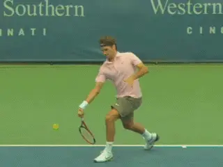
Poly string has made the use of extreme swing elements routine.
The other huge factor is poly string, which is now virtually universal on the tour and is becoming more and more prevalent at all levels. Poly string increases spin levels 25% or more, again, virtually automatically. (link for more info on the nature and effect of poly.)
And poly has a synergistic effect on velocity and technique. With greater spin players can swing the rackets faster and faster, relying on the poly effect to give them consistency and control. To generate this additional velocity and spin, players have adopted more extreme biomechanical swing elements, as we will see.
The data shows that among the current top players there has been a huge average increase in spin levels even since the 1990s. While players like Pete Sampras and Andre Agassi hit forehands spinning at 2000rpm or less, now average spin is often 3000rpm or higher.
The bottom line is that together the rackets and the strings give players the ability to do things to a tennis ball on a consistent basis that simply were not possible in the classical era.
The Courts
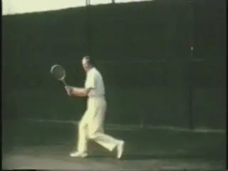
Contact points through most of the classical era were between knee and waist height.
The other fundamental change that is often overlooked is the courts themselves. This has been just as influential as racket and string technology in the evolution of technique.
For most of the last century three of the four major tournaments were played on grass courts. The bounces were low, uneven and often unpredictable.
The wide spread growth of hard courts, including their adoption at the U.S. and Australian Opens, changed things in a fundamental way. On hard courts the ball bounced higher, but also bounced true on virtually every shot.
The effect has been magnified further still on tour today as hard courts typically have much more particulate in the top coats, bounce even higher, and play much slower than the hard courts common 10 years ago.
Even the last remaining Slam grass courts at Wimbledon have been "improved" so they bounce much more evenly and also significantly higher, with many players saying the bounce is now something close to hard court play.
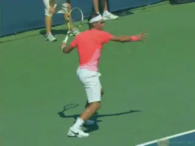
Slower courts, heavier spin, higher bounces, higher contact.
Indoor surfaces have also been standardized. In the early open era indoor cushioned carpet courts such as supreme court were the norm, with a bounce that was lower, deader, and closer to grass. Now indoor courts are typically finished with top coats similar or identical to outdoor hardcourts, for example at the tour ending ATP championships in London.
So what is the cumulative effect of the racket, string and court changes? First the slower, higher bouncing courts have increased the length of time it takes a ball hit at a given speed to travel from one player to the other. This means that although the absolute velocity of the shots has increased, this increase has been partially nullified by the slower courts.
Equally or more importantly, the higher bounces have drastically raised the contact height---the distance above the court surface at which the ball is struck. Average contact height has been increased further still by the poly strings and the higher levels of topspin.
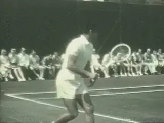
In the classical era mild continental grips were common on the forehand.
The contact height factor continues to go unnoticed or analyzed by mainstream tennis media. In many pro tournament rallies, the average strike zone is now at shoulder level and sometimes above.
These factors--court speed and contact height---may be overlooked, but they are huge in understanding the technical and tactical evolution of the sport and also how that evolution applies or doesn't to tennis at all other levels.
History
To try to understand this, let's go back to the dawn of serious international competitive tennis and see exactly how the game was played technically, and how all that changed over the last hundred years.
The most important change in the last two decades has been in the grips, particularly on the forehand, and this has resulted primarily from the court and equipment changes detailed above. These changes in grip structure have in turn been critical in leading to other major changes in swing biomechanics.

Classical players often used open in additional to neutral stances.
If we look at players from the 1920's through the 1960's, we see that most players used forehand grips that were some version of what we would today call a traditional eastern or, probably more commonly, a mild continental grip, with the index knuckle and/or part of the heel pad shifted somewhat toward the top of the grip.
Those grips were ideal for the contact heights of the day. Playing on grass courts with wooden rackets, ball bounces were usually between knee and waist level. Hard courts were generally slicker and lower bouncing as well.
But since the graphite/poly/court surface revolution the grips of more and more players have moved more and more under the handle. This, as we will see in more detail in the second article, has led to more use of open stances and more use of windshield wiper action, or hand and arm rotation on the follow-throughs. (link for more on the wiper.)
Still it is important to understand that even the radical forehand elements which are so prevalent in the "modern" game, always existed in so-called "classical" style.
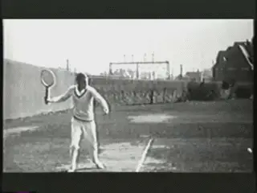
Tilden among others hit reverse and wiper finishes.
Tragically, there is very little good stroke footage of most of the champions of the pre-digital era. Yet what we do have proves the existence of most of the technical elements that are often considered exclusively "modern."
Bill Tilden for example hit windshield wiper and reverse finish forehands. Tilden's major rival Little Bill Johnston played with a semi-western grip with his hand shifted significantly under the handle.
When we look at the classical serve motions we can see hand and arm rotation resulting in "pronated" racket positions in the followthroughs. We can see topspin finishes with the racket coming down on the right side of the body, just as we do with Pete Sampras or Sam Stosur.
It was the golden era of classical, compact volleys. (For a great recent TPA article by Paul Cohen on the classic forehand volley link.)
But Fred Perry hit swinging volleys in the 1930's, as did other players. All the top players used a mixture of neutral and open stances, even with continental forehand grips.

Fred Perry among others hit swinging volleys.
Many advocates of the modern game like to parody the so-called classical forehand. They claim old school players and teachers advocated immediate separation of the hands, straight backswings, and short, linear followthroughs that stay on the player's right side.
The reality however is that classical players used unit turns and brought the left arm across the body in the preparation. They finished with over the shoulder wraps on basic drives and, as noted, used more exotic finishes as well.
Look around at your club. It's depressing how many players have exaggerated modern elements but lack theses fundamentals of preparation, timing, extension etc. There is no doubt in my mind that players like Big Bill Tilden or Don Budge, even with their wooden frames, could have used their forehands to crush the entire modern club playing population and probably a majority of current college players as well.
Backhands
On the backhand side, classical tennis was all one hand. There were virtually no two-handers.

The classical forehand: a unit turn with the left arm stretch, great extension and a wrap followthrough.
One-handed backhands were usually hit with a slightly stronger grip than the forehand---ie, with the hand shifted more toward the top of the frame. But the predominant swing pattern on the backhand was the hard slice or the slice drive. Most players came over the ball only on passing shots, and never did.
Using these technical swing elements with wooden frames and natural gut strings, it was difficult for even the top players to finish points consistently from the backcourt. Players tended to play close to the baseline, took the ball early and/or on the rise, stepped into the ball with neutral stances and looked to move forward.
In general they looked to finish points primarily at the net. The predominate tactical style was serve and volley, or at least all court style with a high percentage of net approaches.
Real Changes
The analysis of the technical history of the game shows that it is important to give the founders of world competitive tennis their due, to understand the sophisticated technical nature of the tennis they played, and to understand the technical continuities that stretch across the history of the game.

In the classic era it was all one hand.
It's equally important to see how technique has evolved, due in large part to the equipment and court changes described above. In some ways this is simply a matter of emphasis or prevalence. Although open stances, modern finishes and swinging volleys go back to the beginnings of the game, there is no doubt that in the current era their frequency has increased exponentially.
But the reality is that the court, racket and string changes have also led to the widespread adoption of certain technical elements that were mostly absent in the pre-open era.
Again, these changes have to do with the increases in spin and contact height we have already noted. Even when players hit with open stance in the pre-classical era, their contact heights remained similar or only slightly higher than with traditional neutral stances. They struck the ball at waist level or mid chest level at the highest and tended to keep their feet on the ground much more.
In the modern game, groundstrokes now are routinely hit at mid chest, shoulder level and higher. This has led to the much wider adoption of under the handle grips, and greater loading in the legs.

The modern forehand can finish with the rear shoulder rotating 180 degrees.
This in turn has led to players exploding upward off the court and making contact in the air with one or both feet off the ground. Contact in the air has in turn opened the door for much greater torso rotation, unrestricted by the friction between the feet and the ground.
Whereas a classical forehand was hit with roughly 90 degrees of forward body rotation, an extreme semi-western forehand struck at shoulder level can have double that rotation. Instead of finishing with the shoulders roughly parallel to the baseline, players are rotating in the air, and finishing with the front shoulder pointing at the opponent as they land back on the court.
There have been major changes on the backhand as well. The most obvious is the rise of the two-hander. But another is the evolution of heavy topspin on the one-handed backhand.
A third important impact has been the reduced prevalence and effectiveness of the slice backhand, and changes in slice technique to adapt to higher contact height and increased spin. (For more on the evolution of the slice backand, link.)

The rise of two-hands is a fundamental modern change.
Yet another critical change has nothing to do with courts and equipment. This is the rule change on the serve that allowed players to leave the court with both feet and make contact with the ball in the air. It seems obvious that this increased use of the legs has led to more power and much heavier spin.
There has also been a seismic shift in the nature of strategy and tactics that relates directly to these changes. This includes the death of the serve and volley game and the rise of extended heavy spin backcourt changes that have come to dominate at the pro level.
Players like Rod Laver and Lew Hoad were transitional figures in the decade before the open era, hitting with more topspin off both sides, especially the backhand. Yet both were serve and volley and all court players.
John McEnroe was another important transitional figure and won major titles with both wooden and graphite rackets. Although McEnroe could hit significant topspin off both wings, he also relied on slice backhands and, like the great classical players, took the ball on the rise close to the baseline and looked to finish primarily at the net.
Through the 1980's and early 90's, the serve and volley style continued to be viable at the highest levels of the game, with McEnroe, Stefan Edberg, and Boris Becker all winning multiple Slam titles.

McEnroe, a transitional figure with a classic game and a graphite racket.
But Borg was a transitional figure of another kind and the harbinger of the next age. Playing with a grip on his forehand that was shifted slightly toward the semi-western he used increased topspin, deeper court positions, and incredible court coverage to play a proto modern backcourt style---despite using a wooden racket.
Then along came Ivan Lendl and Andre Agassi. They were among the first players to exploit the power and spin potential of the new rackets more fully and both players held what were extreme forehand grips for the day.
Lendl took the level of power in the pro game to new levels. Agassi showed that the return could be a weapon that neutralized net attack with power and spin.
But what about Pete Sampras? No doubt one of the greatest, most beautiful, and courageous players of all times, Pete was probably the last great classical champion. Pete played with a relatively small headed graphite frame and ultra thin gauge natural gut. He had a classic eastern grip forehand, with a gorgeous classical finish taught to him by the great Robert Lansdorp (link.)
He had a one-handed eastern backhand that he could drive, come over with heavy spin, or slice. And, obviously, he was one of the greatest serve and volley players of all time, if not the very greatest of all.
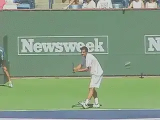
The last of the great classical players?
The Sampras era was transitional. With his retirement, with the increasing prevalence of poly strings, and with the continued adoption of more radical technique elements, so-called modern era tennis became more dominant.
Roger Federer, who idolized Sampras, abandoned his earlier serve and volley tactical style. Heavier spin backcourt players began to fill the top 50 on the computer. Soon the game had Rafael Nadal, playing backcourt tennis like an oversize supercharged Borg, as well the other primarily backcourt champions who followed, Novak Djokovic and Andy Murray.
So in the next article, let's take a look at that next step in the evolution of the game and a more detailed look at the "extreme" elements that have become more predominant. At the same time, however, let's look at the surprisingly strong presence of classical technical components that remain viable, and even central to the pro game. Stay tuned!

John Yandell is widely acknowledged as one of the leading videographers and students of the modern game of professional tennis. His high speed filming for Advanced Tennis and TPA have provided new visual resources that have changed the way the game is studied and understood by both players and coaches. He has done personal video analysis for hundreds of high level competitive players, including Justine Henin-Hardenne, Taylor Dent and John McEnroe, among others.
In addition to his role as Editor of TPA he is the author of the critically acclaimed book Visual Tennis. The John Yandell Tennis School is located in San Francisco, California.